МИНИСТЕРСТВО ТРАНСПОРТНОГО СТРОИТЕЛЬСТВА СССР
ВСЕСОЮЗНЫЙ ОРДЕНА ОКТЯБРЬСКОЙ РЕВОЛЮЦИИ НАУЧНО-ИССЛЕДОВАТЕЛЬСКИЙ ИНСТИТУТ ТРАНСПОРТНОГО СТРОИТЕЛЬСТВА (ЦНИИС)
НОРМЫ
ПО ПРОЕКТИРОВАНИЮ И ПРОИЗВОДСТВУ
РАБОТ
ПО ИСКУССТВЕННОМУ ПОНИЖЕНИЮ
УРОВНЯ ПОДЗЕМНЫХ ВОД
ПРИ СООРУЖЕНИИ ТОННЕЛЕЙ И МЕТРОПОЛИТЕНОВ
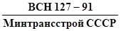
МОСКВА 1992
ПРЕДИСЛОВИЕ
Одним из наиболее распространенных при строительстве метрополитенов специальных способов работ является искусственное понижение уровня грунтовых вод.
Проектирование и производство работ по этому способу до настоящего времени осуществлялось согласно Инструкции по проектированию и производству работ по искусственному понижению уровня грунтовых вод при сооружении тоннелей и метрополитенов (ВСН 127-77, Минтрансстрой СССР).
Однако за время, прошедшее после выпуска этой Инструкции, опыт водопонижения существенно обогатился при строительстве тоннелей на железнодорожных и автодорожных магистралях (Байкало-Амурская ж.-д. магистраль, отдельные тоннели в Армении и Грузии, в Сибири и на Дальнем Востоке); в практику производства работ по стабилизации окружающих выработку грунтов вошли усовершенствованные методы горизонтального и вертикального дренажа, в том числе посредством скважин, забуриваемых из подземной выработки.
В то же время не получил практического подтверждения эффективности для транспортного тоннелестроения метод электроосушения грунтов.
Все это, наряду с необходимостью согласования норм на водопонижение с новыми редакциями глав СНиПа на проектирование метрополитенов (СНиП 2.05.04-92 и транспортных тоннелей СНиП 3.05.05-91), производство работ (III-44-77), а также нормативного документа на инженерно-геологические изыскания (ВСН 190-78), дает основание считать, что существующая «Инструкция» (ВСН 127-77) не полностью отвечает современным требованиям практики и проектирования.
Настоящие нормы составлены в развитие указанных нормативных документов, содержат практические указания по проектированию, производству и приемке работ по водопонижению, а также специфические требования к изысканиям.
Нормы разработаны Всесоюзным научно-исследовательским институтом транспортного строительства (докт. техн. наук, проф. Меркин В.Е., к.т.н. Громов А.Г., инженеры - Кривенков В.А. и Егоров Ю.Л.), Государственным проектно-изыскательским институтом «Метрогипротранс» (инж. Котов В.В., к.т.н. Сазонов Г.Н. и к.т.н. Квашнин В.А.), Управлением № 157 Главтоннельметростроя (к.т.н. Олейник В.Н., инженеры Киселев В.Н., Шумова Т.Г., Дурнин А.С., Никольский А.В.) под редакцией В.Е. Меркина.
Зам. директора института Г.Д. ХАСХАЧИХ
|
Министерство транспортного строительства СССР |
Ведомственные строительные нормы |
ВСН 127-91 |
|
Нормы по проектированию и производству работ по искусственному понижению уровня подземных вод при сооружении тоннелей и метрополитенов |
Минтрансстрой СССР Взамен ВСН 127-77 |
|
|
Минтрансстрой СССР |
1. ОБЩИЕ ПОЛОЖЕНИЯ
1.1. Нормы распространяются на проектирование и производство работ по искусственному понижению уровня подземных вод с целью обеспечения проходки тоннелей и метрополитенов в водонасыщенных грунтах.
1.2. Нормы являются обязательными для всех проектных и строительных организаций Министерства транспортного строительства СССР, выполняющих проектирование и производство работ по понижению уровня подземных вод при строительстве тоннелей и метрополитенов.
1.3. Водопонижение применяется:
при проходке тоннелей метрополитенов и горных тоннелей;
при проходке стволов шахт;
при строительстве транспортных и пешеходных тоннелей;
при подводке фундаментов под здания, расположенные вблизи тоннелей;
при прокладке или перекладке городских подземных коммуникаций в водонасыщенных грунтах в процессе строительства тоннелей.
1.4. Проектирование водопонижения следует производить на основе материалов инженерно-геологических изысканий, выполняемых согласно Инструкции по инженерно-геологическим изысканиям для проектирования и строительства метрополитенов, горных железнодорожных и автодорожных тоннелей (ВСН 190-78) Минтрансстроя СССР.
|
Внесены Всесоюзным ордена Октябрьской Революции научно-исследовательским институтом транспортного строительства (ЦНИИС) |
Утверждены Минтрансстроем СССР 19 августа 1991 г. № АВ-154 |
Срок введения в действие - |
1.5. При инженерно-геологических изысканиях необходимо определить:
геологическое и литологостратиграфическое строение участков работ;
основные элементы тектонического строения района;
гидрогеологические особенности осваиваемой территории (наличие водоносных горизонтов, их характер, условия питания и разгрузки, взаимосвязь водоносных горизонтов, направление движения подземных вод, их температуру и химический состав);
фильтрационные свойства водовмещающих пород (водопроводимость, коэффициенты фильтрации, пьезо- и уровнепроводность, коэффициент водоотдачи);
гранулометрический состав рыхлых несвязных грунтов.
1.6. В проекте водопонижения должны быть предусмотрены водоохранные мероприятия с целью предотвращения негативного влияния на окружающую среду процессов, сопровождающих водопонижение.
В комплекс этих мероприятий должны входить:
ликвидация скважин системы водопонижения после окончания работ специальным тампонажем, исключающим взаимосвязь водоносных горизонтов и обеспечивающих целостность массива горных пород в зоне тоннелей;
создание емкостей или отстойников, оборудованных фильтрами для очистки воды, с целью предотвращения сброса загрязненных вод в поверхностные водотоки и их инфильтрации в водоносные горизонты.
1.7. В проекте водопонижения следует выполнять прогноз развития негативных инженерно-геологических процессов, связанных с изменением гидрогеологических условий при снижении уровня подземных вод с оценкой возможности образования деформаций горных пород и поверхности под влиянием суффозии и уплотнения грунтов.
1.8. Работы по водопонижению должны проводиться в соответствии со СНиП 3.02.01-87 р. 2. Строительное водопонижение, настоящими Нормами, правилами противопожарной безопасности, техники безопасности и охраны труда, техническими условиями, инструкциями и указаниями на отдельные виды тоннельных и строительно-монтажных работ.
1.9. Проведение работ по водопонижению допускается только при наличии рабочей документации и соответствующего ей проекта производства работ.
Проект производства водопонизительных работ, как правило, должен разрабатываться организацией, выполняющей эти работы, как составная часть проекта производства земляных и других общестроительных работ.
2. ПРОЕКТИРОВАНИЕ И ВЫБОР СПОСОБОВ ВОДОПОНИЖЕНИЯ
2.1. Проектирование водопонижения следует осуществлять в две стадии: проект и рабочая документация.
Технико-экономическое обоснование (ТЭО) работ по водопонижению выполняется, как правило, с использованием аналогов.
2.2. На стадии проекта должны быть определены:
величина требуемого понижения уровня грунтовых вод;
размеры территории, в пределах которой должно быть выполнено необходимое понижение уровня грунтовых вод;
способ водопонижения;
расположение системы водопонижения в плане;
типы необходимого оборудования;
продолжительность действия системы водопонижения;
ориентировочный расчет системы водопонижения;
объемы работ и их стоимость.
2.3. Рабочую документацию следует выполнять на основании уточненных сведений о гидрогеологических условиях участка работ и гидрогеологических расчетов, учитывающих конкретную градостроительную обстановку.
2.4. В результате гидрогеологических расчетов (приложение 1) должны быть установлены:
производительность водопонизительных устройств и необходимое их количество с учетом взаимодействия;
размеры депрессионной воронки;
понижение уровней грунтовых вод в заданных точках;
продолжительность формирования депрессионной воронки необходимых размеров.
2.5. В сложных гидрогеологических условиях режим водопонижения должен уточняться в лабораторных условиях (методами аналогии, моделирования и др.) или опытно-производственными работами, осуществляемыми на стадии разработки рабочей документации.
2.6. Рабочая документация по водопонижению должна соответствовать требованиям глав СНиП 2.06.14-85, 2.06.15-85 и 3.02.01-87 и должна содержать:
план расположения водопонизительных и наблюдательных скважин, насосных агрегатов, водоотводящих устройств (лотков, труб, канав), контуры устраиваемой подземной выработки или котлована, а также расположенные на участке работ сооружения и коммуникации;
геологические разрезы, на которых указаны водопонизительные скважины, положение фильтров и насосов, а также контуры проектируемых и существующих сооружений;
перечень и характеристики оборудования, а также спецификацию труб и основных материалов;
указания по способам устройства водопонизительных скважин и пьезометров;
указания о расположении источников и схемы энергопитания;
указания о местах сброса откачиваемой воды;
график монтажа и эксплуатации водопонизительных установок;
чертежи конструкций водопонизительных скважин и фильтра;
гидрогеологические расчеты.
2.7. Рабочая документация по водопонижению согласовывается с городскими организациями. В случае влияния систем водопонижения на работу действующих водозаборов, рабочая документация должна быть согласована с организацией, эксплуатирующей водозабор.
2.8. В водопонижении при строительстве тоннелей и метрополитенов могут применяться следующие типы водоприемных сооружений - буровые скважины, оборудованные насосами; вертикальные скважины-дрены; иглофильтровые установки; горизонтальные выработки и скважины; лучевые водозаборы; комбинированные системы средств водопонижения.
Выбор того или иного способа водопонижения определяется:
гидрогеологическими условиями;
проектом организации строительства объекта (тоннель, участок линии метрополитена);
условиями городской застройки;
расположением подземных коммуникаций и сооружений;
технико-экономическими показателями.
2.9. Водопонизительные скважины, оборудованные насосами, являются наиболее распространенными типами систем водопонижения и могут применяться в самых разнообразных гидрогеологических условиях. Глубины скважин должны определяться в зависимости от глубины залегания и мощности водоносного горизонта, фильтрационных характеристик пород, необходимой величины понижения уровня грунтовых вод.
2.10. Вертикальные скважины-дрены могут применяться при специальном обосновании в соответствующих гидрогеологических условиях для перепуска воды из вышележащего в нижележащий водоносный горизонт. При этом нижележащий водоносный горизонт должен иметь бóльшую проницаемость и более низкий уровень подземных вод по сравнению с вышележащим горизонтом.
Системы дренажных скважин должны быть оборудованы фильтровыми звеньями на осушаемый и поглощающий водоносные горизонты.
2.11. Горизонтальные дренажные выработки (галереи, штольни) устраиваются параллельно основной сооружаемой выработке; могут быть временными - на период строительства, и постоянными - на период эксплуатации тоннелей.
Горизонтальные дренажные выработки и скважины следует устраивать, как правило, в скальных и полускальных трещиноватых водонасыщенных грунтах. В неустойчивых рыхлых отложениях горизонтальные дренажные скважины допускается применять при соответствующем технико-экономическом обосновании.
2.12. Лучевые водозаборы (системы горизонтальных или вертикальных скважин, сооружаемых из горной выработки и имеющих радиальное расхождение для осушения водоносных пластов) рекомендуется применять в пластах небольшой мощности.
При этом в зависимости от гидрогеологических, градостроительных, технологических и других условий могут применяться следующие схемы лучевых водозаборов:
лучевой водозабор с одним ярусом горизонтальных скважин-фильтров;
многоярусный лучевой водозабор с расположением фильтров на разных уровнях (этот способ основан на устройстве водосборных шахт, оборудованных системой радиально расходящихся фильтров);
лучевой водозабор с вертикальными скважинами, пробуренными в кровлю выработки для снятия напора в водоносном пласте, расположенном вблизи кровли горизонтальной выработки.
2.13. Комбинированные системы водопонижения могут быть эффективно применены в многослойной толще, когда котлованом вскрываются два или более водоносных слоя, разделенных водоупорными породами.
При этом основное водопонижение должно осуществляться скважинами, оборудованными погружными насосами, а остаточная вода - сниматься легкими иглофильтрами или прибортовым дренажом.
2.14. В качестве средств для водопонижения при строительстве тоннелей и метрополитенов в водонасыщенных грунтах могут применяться:
легкие иглофильтровые установки (ЛИУ);
эжекторные иглофильтры (ЭИ);
установки вакуумного (УВВ) и забойного (УЗВМ) водопонижения;
водопонизительные скважины, оборудованные погружными, водоструйными, пневматическими насосами, эрлифтными установками.
Выбор технических средств водопонижения должен определяться гидрогеологическими условиями и необходимой величиной понижения уровня грунтовых вод.
Для ориентировочного выбора средств водопонижения рекомендуется табл. 2.1.
Таблица 2.1. Рекомендуемые средства водопонижения
|
Коэффициент фильтрации Кф, м/сут |
Величина понижения уровня грунтовых вод, м |
|||
|
до 5 |
до 20 |
более 20 |
||
|
Супесь, пески пылеватые |
0,2 - 0,7 |
Установки ЭВВУ, УВВ, ЛИУ, ЭИ |
Ярусные установки, ЛИУ, ЭИ, ЭВВУ |
Скважины с погружными насосами и дополнительным вакуумированием |
|
Пески: |
Легкие иглофильтровые установки |
|||
|
мелкие |
1 - 10 |
Одноярусные |
Многоярусные, эжекторные иглофильтры |
То же |
|
средние |
10 - 25 |
|||
|
крупные |
25 - 50 |
|||
|
Пески крупные гравелистые. Гравийный грунт |
более 50 |
Откачка воды из скважины центробежными насосами |
Откачка воды из скважины погружными насосами |
То же |
|
Многослойная толща пород различной водопроницаемости |
0,005 - 200 |
Определяется в зависимости от конкретных геологических и гидрогеологических условий |
||
2.15. Необходимое понижение уровня грунтовых вод следует определять от статического уровня грунтовых вод до отметки на 0,5 - 1,0 м ниже наиболее пониженной части котлована или тоннеля.
2.16. Для понижения уровня грунтовых вод на глубину более 5 м рекомендуется применять многоярусные установки легких иглофильтров (приложение 2), одноярусные установки эжекторных иглофильтров (приложение 3), вакуум-концентрические скважины или водопонизительные скважины, оборудованные погружными насосами - вертикальными центробежными типа ЭЦВ (приложение 4) или водоструйными и пневматическими (приложение 5).
2.17. При ширине котлованов более 18 - 20 м, а также в грунтах с низкими фильтрационными свойствами следует предусматривать промежуточный ряд иглофильтров.
2.18. Рабочее и установленное резервное оборудование должно обеспечивать в течение всего периода работ поддержание сниженного уровня грунтовых вод на заданной отметке.
2.19. Резерв водопонизительных скважин, оборудованных насосами, должен составлять до 20 % расчетного количества скважин водопонизительной системы.
2.20. При откачке воды из супесей, пылеватых и мелких песков в проекте должна быть предусмотрена песчано-гравийная обсыпка вокруг фильтров. Состав песчано-гравийной обсыпки подбирается согласно п. 3.2.7.
2.21. В проектах по водопонижению должна предусматриваться возможность измерения расхода воды, откачиваемой каждым насосом водопонизительной системы.
2.22. В проекте производства работ должны быть предусмотрены дополнительные мероприятия, обеспечивающие безопасность ведения работ вблизи высоковольтных линий, на пересечениях железных дорог, в условиях сплошной городской застройки, вблизи подземных коммуникаций и сооружений и т.п.
2.23. При необходимости эксплуатации водопонизительных установок в зимнее время в проекте должны быть предусмотрены специальные мероприятия по утеплению насосных станций и коммуникаций.
2.24. Программа проведения опытно-производственных работ составляется проектной организацией и включает следующие вопросы:
выбор местоположения и схемы опытного куста - количество рабочих и наблюдательных скважин, расположение их на местности с указанием расстояний между водопонизительными и наблюдательными скважинами, глубину и конструкцию скважин, тип и конструкцию фильтровых звеньев;
оборудование водопонизительных скважин с указанием типа насосного оборудования и расположения его в скважине;
порядок включения скважин в работу, предполагаемый дебит скважин, частота замеров уровней воды и дебитов скважин;
продолжительность откачки.
2.25. Система водопонижения на опытно-производственном участке должна монтироваться и включаться в работу с опережением общестроительного графика.
3. ОРГАНИЗАЦИЯ И ПРОИЗВОДСТВО РАБОТ
3.1. Подготовительные работы
3.1.1. До начала производства работ по водопонижению должно быть уточнено расположение и состояние подземных коммуникаций, осмотрено состояние зданий и сооружений, расположенных в зоне расчетной депрессионной воронки, оформлено разрешение на производство работ, связанных с вскрытием земной поверхности.
Участок производства работ в пределах городской застройки необходимо оградить забором.
3.1.2. В случае необходимости отдельные здания и сооружения следует оборудовать системой реперов в соответствии с проектом.
В процессе производства работ за деформациями реперов должно быть организовано постоянное наблюдение, а при появлении на сооружениях деформаций и трещин необходимо устанавливать «маяки» из гипсовых или цементных покрытий, металлических стержней и т.п.
3.1.3. Земляные выработки должны быть ограждены от поступления поверхностных вод.
Устройства, необходимые для отвода поверхностных вод, выполняются до начала земляных работ. При производстве земляных работ на косогоре в первую очередь устраиваются нагорные канавы.
3.1.4. Продольный уклон кюветов, отводящих воду, должен быть не менее 0,002. На болотах и речных поймах уклон допускается уменьшать до 0,001. Углы откосов кювета должны соответствовать категории грунта.
3.1.5. Сброс откачиваемой воды в водотоки или городские водостоки необходимо согласовывать с соответствующими организациями.
3.1.6. До начала производства работ по водопонижению маркшейдерской службой должны быть размечены на местности точки заложения водопонизительных и наблюдательных скважин, трассы всасывающих и напорных коммуникаций, водостоков, места установки насосных агрегатов.
3.1.7. До начала монтажа водопонизительных установок следует проверить их техническую исправность и соответствие требованиям проекта.
Оборудование для работ по водопонижению (насосные агрегаты, буровые станки, компрессорные станции, контрольно-измерительное оборудование и т.д.) должно иметь паспорта с указанием технических характеристик.
Оборудование, бывшее в употреблении, должно быть проверено на соответствие его характеристик паспортным данным. В случае необходимости должен быть произведен соответствующий ремонт или оборудование должно быть снабжено актом, уточняющим его характеристики в связи с износом.
3.1.8. Иглофильтры, коллекторы и насосные агрегаты при многоярусном водопонижении рекомендуется монтировать на специальных площадках, на бермах котлованов с откосами или на кронштейнах в котлованах со свайным ограждением.
3.1.9. В подготовительные работы также входит:
определение порядка передвижения и совместной работы буровых агрегатов и кранов;
обеспечение снабжения водой, электроэнергией и сжатым воздухом;
подготовка площадок для бурения скважин и подъезда к ним;
подготовка комплектов инструмента и необходимых материалов.
3.1.10. Все работы должны производиться в сроки, установленные графиком производства работ.
3.2. Конструкции и обустройство систем водопонижения
Конструкции и установка фильтров
3.2.1. Тип и конструкции фильтров водопонизительных скважин устанавливаются проектом. В зависимости от гидрогеологических условий при устройстве фильтров применяются покрытия из проволочной обмотки, сетки галунного плетения, сетки квадратного плетения, штампованные просечные листы (приложения 6, 7, 8, 9).
3.2.2. При откачке грунтовой воды, обладающей агрессивными свойствами, фильтры водопонизительных скважин следует изготавливать из антикоррозионных материалов или покрывать антикоррозионным слоем.
3.2.3. Размеры проходных отверстий фильтров при их контактировании с водоносным грунтом рекомендуется определять в зависимости от коэффициента неоднородности грунта Kн по табл. 3.1.
Таблица 3.1. Рекомендуемые размеры проходных отверстий фильтров, мм
|
Kн £ 2 |
Kн ³ 2 |
|
|
Трубчатый с круглой перфорацией |
(2,5 - 3) d50 |
(3 - 4) d50 |
|
То же со щелевой перфорацией |
(1,25 - 1,5) d50 |
(1,5 - 2) d50 |
|
Сетчатый |
(1,5 - 2) d50 |
(2 - 2,5) d50 |
В таблице принято:
d50 - размер
частиц, содержание которых в водоносном пласте по массе составляет 50 %
(определяется по графику гранулометрического состава грунтов, построенному в
полулогарифмическом масштабе); 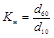
Меньшие размеры проходных отверстий относятся к мелким пескам, большие - к крупным.
Размеры проходных отверстий фильтров, контактирующих со слоем гравийной обсыпки (толщиной не менее 50 мм), должны подбираться, исходя из среднего диаметра частиц обсыпки.
3.2.4. Скважность фильтра (отношение площади отверстий ко всей поверхности фильтрующей части) следует доводить:
в фильтрах с проволочной обмоткой и каркасно-стержневых - до 40 - 60 %;
в трубчатых фильтрах с круглой или щелевой перфорацией - до 20 - 25 %.
3.2.5. Расстояние между проходными отверстиями фильтров для обеспечения необходимой скважности и прочности рекомендуется принимать:
для круглых отверстий - 20 - 40 мм;
для щелевых отверстий между осями щелей - 10 - 20 мм.
Во всех случаях длину щелей следует принимать равной 10-кратной ширине щели.
3.2.6. Расчетная производительность скважины, определяемая гидрогеологическим расчетом, не должна превышать водозахватную способность фильтра, которую определяют по формуле:
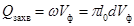
где Vф -
допустимая скорость фильтрации, м/сутки; 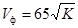 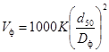
Расчетом определяются или длина фильтра при заданном диаметре, или диаметр при заданной длине.
3.2.8. В гравийных фильтрах толщину обсыпки необходимо назначать в соответствии с принятой конструкцией фильтра.
Толщина обсыпки для фильтров, собираемых на забое скважин и засыпаемых гравием по затрубному пространству, должна быть не менее 50 мм.
3.2.9. Заглубление фильтровой части следует принимать с расчетом, чтобы верх сетки находился ниже расчетного пониженного уровня грунтовых вод.
При близком залегании водоупора относительно лотка сооружения и применении установок, способных откачивать водо-воздушную смесь, заглубление фильтровой части следует устанавливать проектом.
3.2.10. Перед установкой фильтровой колонны, при ударно-канатном способе бурения, должен быть тщательно очищен забой скважины путем налива в нее чистой воды и желонирования до полного осветления; при вращательном бурении с прямой и обратной промывкой скважину прокачивают или промывают чистой водой с помощью бурового насоса.
3.2.11. При установке фильтра необходимо убедиться в прочности и плотности соединений опускаемых его звеньев, в наличии на колонне направляющих фонарей и заглушки отстойника колонны.
3.2.12. Обсыпку фильтровой колонны песчано-гравийным материалом следует производить после ее установки в скважине по мере удаления обсадной трубы. Ось колонны фильтровых труб должна совпадать с осью скважины.
Поверхность песка и гравия, насыпаемых перед каждым очередным подъемом обсадных труб, не должна превышать отметку низа обсадной трубы более чем на один метр при диаметре фильтра до 150 мм и более чем на два метра при диаметре фильтра более 150 мм. После каждого очередного подъема обсадной трубы над ее низом должен оставаться слой обсыпки высотой не менее 0,5 м.
3.2.13. Сразу после установки фильтровой колонны и устройства песчано-гравийной обсыпки необходимо тщательно прокачать скважину эрлифтом.
При установке фильтра в скальных и полускальных грунтах допускается производить прокачку скважин насосами. Запрещается прокачивать скважину насосом, предназначенным для ее эксплуатации.
3.2.14. Если по окончании сооружения водопонизительной скважины в нее не монтируется глубинный насос, то устье скважины необходимо закрыть металлической крышкой.
3.2.15. Внутренний диаметр фильтровой колонны должен превышать наружный диаметр эксплуатационного насоса не менее чем на 50 мм.
3.2.16. В конструкцию скважины, предусмотренную проектом (приложение 36), в процессе производства работ изменения могут быть внесены только после согласования их с проектной организацией. Оборудование скважины фильтром оформляется актом (приложение 34).
Легкие иглофильтровые установки
3.2.17. Легкие иглофильтры погружают в грунт способом гидроподмыва под действием собственного веса с помощью струи воды давлением 0,3÷0,5 МПа, размывающей грунт под наконечником фильтра (приложение 11), или монтируют в заранее пробуренные скважины. В глинистых и суглинистых грунтах допускается предварительная проработка ствола скважины трубой, снабженной наконечником с фрезой.
Данные об установке фильтров заносят в журнал погружения иглофильтров (приложение 12).
3.2.18. Иглофильтры следует погружать при постоянной подаче рабочей воды в вертикальном положении во избежание обрушения стенок скважины и затруднений при извлечении его из грунта по окончании работ.
Для лучшей промывки затрубного пространства при гидравлическом погружении иглофильтров рекомендуется несколько раз замедлять погружение, придерживая фильтр на весу.
3.2.19. В мелкие и среднезернистые пески легкие иглофильтры следует погружать при напоре 0,3 - 0,35 МПа. При погружении иглофильтров в глинистые прослои грунта и гравий давление воды следует увеличивать до 0,4 - 0,5 МПа.
3.2.20. При погружении иглофильтров в плотные слои следует периодически приподнимать и опускать иглофильтр, исключая вдавливание их наконечников в грунт, так как при этом шаровой клапан закрывает отверстие для выхода промывочной струи воды.
3.2.21. Для ускорения погружения иглофильтров не следует увеличивать напор и расход воды, так как при этом затрудняется образование естественного фильтра из крупных фракций грунта.
3.2.22. При погружении иглофильтров в толщу, состоящую из слоев разной проницаемости, необходимо, чтобы фильтровое звено находилось в наиболее проницаемом слое.
3.2.23. При погружении иглофильтров допускается использовать воду непосредственно из водопроводной сети (при достаточном ее давлении) или подавать воду специальным насосом, сагрегированным с заполненной водой емкостью объемом 4 ÷ 5 м3.
3.2.24. Общая длина иглофильтра (собственно иглофильтр и надфильтровые трубы) должна быть подобрана так, чтобы фильтровое звено было расположено на предусмотренных проектом отметках. При сборке должна быть обеспечена герметичность соединения звеньев труб. Перед погружением иглофильтра в грунт осматривают все его соединения, шаровой клапан и фильтровую сетку.
Иглофильтры, уровень воды в которых понижается медленно или совсем не понижается, следует извлечь, промыть и установить вновь.
3.2.26. Затрубное пространство при погружении иглофильтров в мелкозернистые пески, содержащие значительные примеси глинистых и илистых прослоек, должно быть засыпано крупным песком или смесью песка с гравием (фракцией от 0,5 до 5 мм).
Во избежание обрушения стенок скважины до окончания обсыпки иглофильтра крупнозернистым песком не следует прекращать подачу промывочной жидкости через иглофильтр.
При погружении, промывке и обсыпке иглофильтров необходимо руководствоваться «Паспортом-инструкцией иглофильтровой установки» завода-изготовителя.
3.2.27. При низком дебите иглофильтровой установки в зимнее время необходимо утеплять коллектор, гибкие шланги и иглофильтры по мере их обнажения при разработке грунта.
3.2.28. Монтаж, пуск, эксплуатация и демонтаж насосов должны производиться в соответствии с инструкциями заводов-изготовителей насосного оборудования.
3.2.29. При монтаже насосов, всасывающих и напорных коммуникаций должна быть обеспечена герметичность всех соединений.
3.2.30. Всасывающий коллектор иглофильтровых установок должен укладываться на подкладках по спланированной поверхности грунта или на кронштейнах, приваренных к свайному ограждению котлована с уклоном 0,005 - 0,002 от насоса.
3.2.31. Звенья коллектора соединяются между собой на фланцах с резиновыми прокладками и испытываются под давлением 0,1 - 0,2 МПа.
3.2.32. При откачке воды более чем одним насосом коллектор следует разделять задвижками на секции так, чтобы каждый насос откачивал воду из отдельной секции.
3.2.33. Насосы легких иглофильтровых установок рекомендуется располагать в средней секции коллектора для уменьшения гидравлических потерь во всасывающей линии.
3.2.34. Иглофильтр с коллектором соединяют инвентарным армированным шлангом с фланцевым соединением на резиновой прокладке, которые устанавливаются одной стороной на фланец иглофильтра, другой - на фланец коллектора.
3.2.35. Насосы легких иглофильтровых установок перед монтажом должны быть осмотрены для проверки их исправности и отсутствия внутри части посторонних предметов.
3.2.36. Насосы следует присоединить к всасывающему коллектору армированным всасывающим шлангом. Предварительно следует проверить исправность обратного клапана.
3.2.37. По окончании монтажа над насосной установкой строят временное помещение. В зимнее время помещение необходимо утеплять.
В зимнее время при остановке насоса на длительное время необходимо выпускать воду из насоса, всасывающего коллектора и армированных шлангов. При образовании во всасывающей системе ледяных пробок их необходимо ликвидировать до пуска насоса в эксплуатацию.
3.2.38. Для измерения дебита насосной установки на напорном или сливном трубопроводе необходимо устанавливать отвод, в конце которого устанавливаются задвижка и мерная емкость.
Эжекторные иглофильтры
3.2.39. Эжекторные иглофильтры в зависимости от инженерно-геологических условий монтируют или в заранее пробуренных скважинах или погружают в грунт способом гидроподмыва (приложение 13).
3.2.40. Эжекторные иглофильтры следует устанавливать в предварительно пробуренные скважины в случаях, когда:
в грунте содержится значительное количество крупнообломочного материала, плотных глин или прослоев скальных грунтов;
работы по водопонижению производятся в непосредственной близости от жилых зданий, промышленных сооружений и подземных коммуникаций;
необходимо устройство песчано-гравийной обсыпки вокруг иглофильтров.
3.2.41. Скважины рекомендуется бурить преимущественно роторным способом с обратной промывкой чистой водой или ударно-канатным способом.
3.2.42. Для проходки скважин в зоне неводоносных грунтов допускается шнековый способ бурения.
3.2.43. Перед установкой эжекторного иглофильтра скважину необходимо промыть до полного осветления воды.
3.2.44. Обсыпку иглофильтров следует вести до отметки статического уровня грунтовых вод по мере извлечения обсадных труб. Выше этой отметки затрубное пространство засыпается местным грунтом (см. приложение 13).
3.2.45. Пропускную способность эжекторных иглофильтров следует проверять наливом в них воды, так же как и в случае с легкими иглофильтрами (см. п. 3.2.25).
3.2.46. При гидравлическом погружении иглофильтров в грунты, сильно поглощающие воду (гидроподмыв), следует дополнительно подавать к промывочной струе на забой скважины сжатый воздух. На воздушной линии должен быть установлен обратный клапан, исключающий попадание воды в компрессор.
3.2.47. Засыпать гравийный материал в затрубное пространство следует при уменьшенном расходе рабочей воды.
3.2.48. При проходке прослоев глинистых грунтов для увеличения диаметра размыва следует замедлять скорость погружения иглофильтра.
3.2.49. В случае прекращения выхода пульпы из скважины на поверхность и возрастания сопротивления гидравлическому погружению иглофильтра его следует извлечь и погружение начать вновь.
3.2.50. Во избежание обрушения стен скважины и заклинивания иглофильтра грунтом, а также для соблюдения вертикального положения погружаемые иглофильтры следует периодически приподнимать и опускать, не допуская при этом повреждения сетки фильтров.
3.2.51. На каждый эжекторный иглофильтр составляется паспорт (приложение 14).
3.2.52. До начала монтажа водоподъемной части эжекторного иглофильтра должно быть проверено качество его изготовления:
соосность насадки с диффузором;
гладкость внутренних поверхностей насадки и диффузора;
герметичность сварных швов и резьбовых соединений;
прямолинейность наружных и внутренних труб.
3.2.53. Установку водоподъемных частей следует начинать после погружения в грунт наружных колонн труб иглофильтров. Колонны водоподъемных труб с укрепленными в нижнем конце эжекторными устройствами необходимо опускать внутрь наружной колонны, наращивая отдельные звенья труб по мере их опускания.
Количество и длину звеньев труб для внутренней колонны следует подбирать так, чтобы верхний ее конец выступал на 0,8 - 1 м над концом наружной колонны.
Все резьбовые соединения должны быть собраны с подмоткой льна на сурике или герметике. При сборке и опускании водоподъемных труб следует убедиться в отсутствии в них посторонних предметов и загрязнений.
Внутренняя поверхность колонны должна быть гладкой, без выступов в местах соединения звеньев. На ней должна быть нанесена метка, по которой можно убедиться, что опорное кольцо село на седло.
На верхнем конце опущенной до проектной отметки внутренней колонны должен быть укреплен хомут и установлен сальник, для чего: затягивают гайки, расположенные над хомутом; уплотняют сальник; присоединяют шлангом иглофильтр к патрубку водосбросного трубопровода.
3.2.54. На распределительных и водосбросных трубопроводах для подключения иглофильтров должны быть установлены штуцеры в количестве, превышающем число смонтированных иглофильтров не менее чем на 10 %.
На штуцерах должны быть установлены пробковые краны.
В случае безнапорного водосбросного трубопровода установка на нем пробковых кранов необязательна.
3.2.55. Звенья распределительного и водосбросного трубопроводов должны соединяться на фланцах с резиновыми прокладками или на сварке.
3.2.56. Трубопроводы следует монтировать на подкладках в непосредственной близости от эжекторных иглофильтров параллельно их створу.
Расстояние между подкладками не должно превышать 4 м.
3.2.57. На выбросном патрубке насоса, питающем распределительный трубопровод, необходимо устанавливать задвижку.
Всасывающий патрубок насоса, нагнетающего рабочую воду, необходимо располагать ниже уровня воды в циркуляционном баке из расчета, чтобы объема воды, находящегося в циркуляционном баке выше всасывающего патрубка насоса, хватало на заполнение системы трубопроводов и эжекторных иглофильтров в момент запуска системы.
Всасывающий патрубок насоса необходимо защищать сеткой с общей площадью отверстий, в три-четыре раза превышающей площадь сечения всасывающей трубы.
3.2.58. Для распределительных трубопроводов следует применять стальные трубы, рассчитанные на внутреннее давление не менее 1,6 МПа.
3.2.59. Смонтированные трубопроводы должны быть продуты сжатым воздухом и промыты водой, после чего следует провести их гидравлическое испытание под давлением до 1,0 МПа, которое не должно снижаться в течение 15 мин.
Результаты испытания оформляются актом (приложение 15).
3.2.60. Для контроля за работой установок на напорном патрубке насоса должен быть установлен манометр.
3.2.61. Для предотвращения замерзания воды в трубопроводах и иглофильтрах их необходимо утеплять.
В наиболее низких частях трубопроводов следует устанавливать вентили для слива воды.
3.2.62. Откачиваемая вода должна отводиться по специальным трубопроводам или лоткам.
3.2.63. После окончания монтажа водопонизительной установки насосная станция должна быть включена на пробный пуск.
В пусковой период должны быть окончательно проверены, отрегулированы и испытаны насосы, электродвигатели, электропусковая аппаратура, эжекторные фильтры, коммуникации. Вся система должна быть подготовлена к эксплуатации.
3.2.64. Насосные станции рекомендуется сооружать по типовым проектам. Они должны соответствовать требованиям всех действующих норм и правил промсанитарии и противопожарной безопасности, а также условиям эксплуатации водопонизительной установки.
3.2.65. Место строительства насосной станции или установки насосов должно определяться проектом. При этом для уменьшения гидравлических потерь рекомендуется размещать насосы в центре осушаемого участка.
3.2.66. При размещении агрегатов в насосной станции должны быть соблюдены следующие размеры проходов:
от электросборок до выступающих частей машины - 1,5 м;
между выступающими частями машин - 1 м;
между стенками зданий и машиной или аппаратом - 0,8м.
3.2.67. Освещенность помещения станции искусственным светом по всей площади пола должна быть не менее 60 лк.
3.2.68. Станция должна иметь не менее двух выходов.
Двери и окна должны легко открываться наружу.
3.2.69. Температура в станции должна быть не менее +10 °С. Обогрев ее в зимнее время должен быть предусмотрен проектом применительно к климатическим условиям.
3.2.70. Для монтажа и демонтажа оборудования в насосной станции должен быть установлен монорельс с тельфером соответствующей грузоподъемности.
3.2.71. Насосы и электродвигатели следует монтировать в соответствии с заводскими инструкциями.
Монтаж электрических установок должен быть проведен в соответствии с «Правилами устройства электротехнических установок».
3.2.72. При бетонировании фундаментов под насосные агрегаты эжекторных водопонизительных установок должны выполняться следующие требования:
а) при устройстве бетонных фундаментов перед укладкой бетона необходимо проверить надежность установки закладных деталей и правильность устройства опалубки колодцев для анкерных болтов, обеспечивающей ее последующую беспрепятственную разборку;
б) возле закладных частей, служащих опорами для насоса, бетонную смесь следует уплотнять особенно тщательно;
в) для подливки цементного раствора под рамы насоса и электродвигателя при их выверке, бетонную смесь в фундаменты укладывают на 50 - 100 мм ниже проектной отметки;
г) бетонная смесь должна иметь марку не ниже 200.
Перед бетонированием колодцы анкерных болтов должны быть тщательно очищены от мусора и промыты, на них должны быть установлены и выверены рамы под насосы и электродвигатели.
3.2.73. В сложных условиях строительства (плотная городская застройка, пересечение железнодорожных путей, подземных коммуникаций и сооружений и т.п.), когда остановка водопонизительной установки может привести к аварии, должно быть предусмотрено аварийное независимое питание для привода электродвигателей насосов и освещения с автоматическим включением резерва.
3.2.74. Все электрические кабели, идущие от электропусковой аппаратуры к электродвигателям насосов, должны быть надежно защищены от механических повреждений (уложены в каналах или траншеях, перекрытых щитами из рифленой стали или бетонными плитами и т.п., или подвешены на высоте не менее 3,0 м на столбах или специальных стойках-опорах).
3.2.75. Станции управления насосами для ограждения токоведущих частей, находящихся под напряжением, и защиты от попадания в них воды должны быть размещены в металлических ящиках.
3.2.76. Объем и габариты циркуляционного бака должны определяться проектом и отвечать требованиям его транспортировки.
3.2.77. Циркуляционные баки перед монтажом должны быть осмотрены и наполнены водой для испытания.
3.2.78. При установке на станции двух или более баков они должны быть соединены трубопроводами с задвижками для возможного использования из них воды для запуска любого насоса.
3.2.79. Циркуляционные баки следует устанавливать на бетонные основания.
3.2.80. Для замера дебита водопонизительной установки в циркуляционный бак ниже водослива на 0,6 - 0,8 м следует врезать патрубок диаметром 4² - 6² с задвижкой. Патрубок должен соединяться с трубопроводом водослива.
3.2.81. Насосы с баком должны соединяться трубами на фланцах с уплотнением резиновыми прокладками.
3.2.82. На нагнетательной и всасывающей сторонах насосов следует устанавливать задвижки.
3.2.83. Всасывающую магистраль от насоса к баку необходимо монтировать с уклоном не менее 0,005 в сторону бака.
3.2.84. Трубопроводы должны соединяться с арматурой и приборами при помощи резьбового штуцера, соответствующего диаметру соединений на арматуре и приборах.
3.2.85. Все фасонные части, задвижки, краны и сварные стыки должны располагаться на расстоянии не менее 200 мм от стен помещения.
3.2.86. Если в станции установлено 2 и более насосов, над трубопроводами, соединяющими насосы с баками, должны быть устроены переходы.
3.2.87. Для заполнения водой циркуляционных баков к насосной станции должен быть проведен водопровод от источника водоснабжения, обеспечивающего наполнение циркуляционного бака в течение не более 1 ч.
3.2.88. Насосные станции должны быть укомплектованы следующей контрольно-измерительной аппаратурой:
а) общий щитовой вольтметр;
б) щитовые амперметры;
в) электрические счетчики активной и реактивной энергии;
г) манометр гидравлический со шкалой 0,16 кгс/см2 на прямом и обратном трубопроводах для контроля за циркуляцией воды. Манометры устанавливаются на самых удаленных от насоса частях трубопровода;
д) манометр гидравлический со шкалой 0,16 кгс/см2 для контроля за работой насосов;
е) указатель уровня воды в баке, оборудованный звуковой и световой сигнализацией, подающей сигнал при снижении уровня воды в баке.
Бурение и оборудование скважин погружными насосами
3.2.96. Для бурения водопонизительных скважин, оборудованных погружными насосами, применяются вращательный и ударно-канатный способы бурения.
Выбор типа станка зависит от глубины и диаметра бурения, геологического разреза, гидрогеологических условий, места сооружения скважин, наличия электроэнергии и воды.
Технические характеристики наиболее употребляемых станков приведены в приложениях 18 и 19.
3.2.97. При бурении водопонизительных скважин должны быть приняты меры, предотвращающие их искривление. Отклонение оси скважины от вертикали допускается не более 30°.
3.2.98. Внутренний диаметр конечного звена колонны обсадных труб при отсутствии гравийной обсыпки должен быть больше наружного диаметра фильтровой колонны не менее чем на 40 - 50 мм, а при наличии гравийной обсыпки - на 100 мм и более.
3.2.99. Все работы, связанные с сооружением скважины, должны быть отражены в соответствующих документах:
буровом журнале (приложение 16), заполняемом в процессе бурения;
геолого-техническом разрезе скважины (приложение 17), составляемом по окончании бурения.
3.2.100. В песчаных и песчано-глинистых грунтах с небольшим включением гальки предпочтение следует отдавать вращательному бурению с обратной промывкой чистой водой.
3.2.101. При бурении с обратной промывкой чистой водой необходимо следить:
чтобы скважина была постоянно залита до устья водой;
за соответствием скорости бурения и количеством грунта, поступающего из скважины. Недопустима длительная прокачка скважины без поступательного движения бурового инструмента.
3.2.102. Конечный диаметр бурения должен превышать наружный диаметр фильтровой колонны не менее чем на 300 мм.
3.2.103. Объем отстойника должен не менее чем в 3 раза превышать объем породы, выбуриваемой из скважины.
3.2.104. Вращательное бурение скважин с обратной промывкой без крепления обсадными трубами недопустимо в непосредственной близости от фундаментов зданий и подземных коммуникаций.
3.2.105. При бурении скважин вращательным способом с прямой промывкой в качестве промывочной жидкости следует применять:
в неустойчивых породах (песках, супесях) - глинистый раствор;
в устойчивых породах (известняках, песчаниках) в интервале установки фильтрового звена - воду.
3.2.106. Глинистый раствор в качестве промывочной жидкости должен отвечать следующим требованиям:
обладать необходимой плотностью, которая определяется расчетом в зависимости от конкретных геологических условий;
содержать не более 4 % песка;
водоотдача не должна превышать 14 - 16 см3 за 30 мин при определении прибором ВМ-6;
вязкость по СПВ-5 должна быть от 18 до 35 с.
При бурении скважин в зонах интенсивного поглощения рекомендуется применять растворы высокой вязкости и малой плотности.
При проходке скважин в грунтах, способных к обвалам и вспучиванию, необходимо применять утяжеленный раствор с малой вязкостью.
3.2.107. В процессе бурения частота вращения долота должна регулироваться в зависимости от характера проходимых пород, типа и диаметра долота, диаметра бурильных труб, количества прокачиваемой промывочной жидкости.
При этом чем больше частота вращения долота, тем меньше должно быть осевое давление на инструмент.
3.2.108. Для достижения нормальной промывки скважины при бурении на воду необходимо обеспечить скорость восходящего потока промывочной жидкости в скважине не менее 0,2 м/с. При меньшей скорости восходящего потока следует периодически осуществлять промывку без углубления скважины.
3.2.109. Конечный диаметр скважины должен быть больше наружного диаметра фильтровой колонны не менее чем на 100 мм.
3.2.110. Во избежание искривления ствола скважины в состав бурильного инструмента рекомендуется включать колибраторы или центраторы, соответствующие диаметру бурения.
3.2.111. При бурении скважины необходимо подробно фиксировать в буровом журнале все операции, включая:
скорость углубления скважины;
расход и параметры промывочной жидкости;
частоту вращения породоразрушающего инструмента и осевого давления;
состав технологического бурового раствора.
3.2.112. Ударно-канатное бурение в водонасыщенных песках рекомендуется вести желонкой с плоским клапаном с одновременным креплением скважины обсадными трубами. Диаметр желонки должен быть на 100 мм меньше внутреннего диаметра обсадных труб, в которых ведется бурение.
При образовании в процессе бурения в скважине высокой грунтовой пробки рекомендуется заливать в скважину воду для создания противодавления, превышающего статический напор пластовой воды.
3.2.113. Водоносные пески следует по возможности проходить одной колонной труб.
Башмак колонны следует забивать в водоупорную породу, подстилающую пески, на 0,3 ÷ 0,5 м.
3.2.114. Галечниковые и гравийные грунты следует проходить долотом с применением желонки с плоским клапаном с одновременным креплением обсадными трубами. При проходке сухого гравия и галечника, а также водонасыщенных песков, галечников и гравия, в которых не производится водопонижение, в скважину рекомендуется добавлять «жирную» глину.
3.2.115. В плотных вязких глинах бурение следует вести долотом, как правило, без одновременного крепления обсадными трубами.
Если в скважине отсутствует вода, то перед спуском желонки в скважину следует подливать воду.
Обсадку в этом случае можно выполнять сразу на всю глубину, стремясь период между окончанием бурения и спуском колонны труб сократить до минимума.
3.2.116. При проходке скважин в скальных и полускальных грунтах бурение рекомендуется осуществлять округляющими долотами.
При бурении необходимо исключить сужение ствола скважины и потерю им округлой формы.
При смене сработанного долота на новое, обработку стенок скважины следует начинать на 3 - 4 м выше забоя. Очистку скважины от разбуренной породы следует выполнять желонкой с плоским клапаном.
При отсутствии воды в скважине для облегчения производства работ в нее необходимо периодически подливать воду.
3.2.117. Перед монтажом погружного насоса в скважине необходимо:
проверить скважину шаблоном на проходимость (на всю глубину скважины);
прокачать скважину водой.
3.2.118. Насосы в скважинах можно монтировать автокраном, буровым станком или другими подъемными средствами на водоподъемных трубах, состоящих из отдельных труб длиной 6 - 7 м, соединяемых муфтами.
Допускается соединение труб на фланцах с резиновыми прокладками. Для монтажа насосов в скважину следует применять усиленные водогазопроводные или насосно-компрессорные трубы. Диаметр труб должен соответствовать паспортной производительности насоса.
3.2.119. Верхняя труба водоподъемной колонны должна присоединяться к опорной плите, закрепляемой на устье скважины.
3.2.120. Насос в скважину следует опускать на такую глубину, чтобы при полностью открытой задвижке на нагнетательном трубопроводе всасывающее отверстие насоса находилось под водой. При понижении динамического уровня ниже всасывающего отверстия следует опустить насос на большую глубину или, если это невозможно, регулировать производительность насоса задвижкой.
3.2.121. Перед пуском насоса задвижка на нагнетательном трубопроводе должна быть закрыта.
После пуска насоса задвижка открывается с таким расчетом, чтобы обеспечить максимальный расход воды и непрерывность ее истечения.
При наличии в момент пуска насоса незначительного количества песка в откачиваемой воде допускается останавливать насос до полного осветления воды.
3.2.122. Монтаж, демонтаж и эксплуатация насосов должны производиться в соответствии с инструкцией завода-изготовителя.
3.2.123. Токопроводящий кабель в скважину через каждые 2 - 3 м должен быть прикреплен к напорному трубопроводу. Монтаж токопроводящего кабеля не рекомендуется производить при температуре воздуха ниже -15 °С.
3.2.124. Электрическая станция управления насоса должна быть проверена на стенде. Защита электродвигателя должна быть отрегулирована на номинальный ток. Над станцией управления должна быть установлена будка, защищающая ее от атмосферных осадков.
3.2.125. Для контроля динамического уровня воды над работающим насосом в скважине параллельно водоподъемной колонне труб следует смонтировать пьезометрическую трубку из водогазопроводных или полиэтиленовых труб.
3.2.126. Для замера количества откачиваемой воды на сливном трубопроводе должен быть установлен водомер. В противном случае слив из насоса должен осуществляться в мерную емкость, установленную на общем сливном трубопроводе и оборудованную клапаном, закрывающим слив из мерной емкости при замере.
3.2.127. На опорном колене насоса должен устанавливаться манометр.
3.3. Интенсификация водоотбора при осушении пласта
Вакуумирование скважин
3.3.1. Вакуумирование скважин рекомендуется применять при водопонижении в грунтах с низкими фильтрационными свойствами, близком расположении тоннеля к водоупору и малом столбе воды над водоупором.
3.3.2. Для вакуумирования скважин, оборудованных погружными насосами (приложение 20), следует применять струйные насосы установок УВВ-2 и УЗВМ, которыми одновременно может производиться откачка воды.
Подачу воды на струйные насосы в этом случае следует осуществлять центробежными или поршневыми (буровыми) насосами, сагрегированными с циркуляционными баками таким образом, что один рабочий насос подает воду на группу скважин (см. технологические схемы в прил. 21 и 22).
3.3.3. Расчет параметров струйных насосов, электрооборудования, рабочего насоса и определение количества скважин с глубинными струйными насосами на один рабочий насос рекомендуется выполнять по методике ХИСИ (приложение 24).
3.3.4. Устья вакуумируемых скважин должны быть оборудованы герметичными фланцами с герметичными вводами водоподъемных труб и кабельных вводов погружных насосов.
3.3.5. В скважинах, предназначенных для вакуумирования:
сварка всех стыков фильтровой колонны должна выполняться герметичными швами;
сборка муфтовых соединений водоподъемных труб должна осуществляться с подмоткой льна на сурике;
на оголовниках вакуумированных скважин должен быть установлен вакуумметр.
3.3.6. Во избежание подсоса воздуха через верхнюю часть фильтрового звена при снижении уровня подземных вод, длина фильтрового звена над водоупорным слоем должна быть не более 2-х метров.
3.3.7. Длина отстойника вакуумной скважины должна быть не менее 3-х метров для возможности размещения в нем погружного насоса при максимальном снижении уровня грунтовых вод в осушаемом пласте.
3.3.8. Общая вакуумная магистраль должна быть снабжена краном у каждой отдельной скважины для возможности демонтажа одного насоса без остановки всей системы вакуумирования.
3.3.9. Слив насосов должен осуществляться в циркуляционные баки установок УВВ-2 или УЗВМ, откуда избыточная вода через верхний патрубок поступает в сливной трубопровод.
3.3.10. Циркуляционные баки рабочих насосов должны иметь плотно закрывающиеся крышки во избежание попадания мусора в насадки струйных насосов.
Перед пуском системы вакуумирования циркуляционные баки, напорные и обратные трубопроводы, струйные насосы должны быть промыты чистой водой.
3.3.11. Нагнетательные и всасывающие трубопроводы рабочих насосов должны быть снабжены задвижками.
На нагнетательном патрубке рабочего насоса должен быть установлен манометр.
Нагнетание сжатого воздуха в пласт
3.3.12. Нагнетание сжатого воздуха в осушаемый пласт следует производить при осушении замороженных замкнутых контуров в целях повышения производительности водопонизительных скважин, ускорения сроков осушения и максимально возможного снижения уровня грунтовых вод в замороженном контуре.
3.3.13. Конструкция воздухоподающих скважин (приложение 23), их количество и расположение должны устанавливаться в проекте в зависимости от конкретных гидрогеологических условий, литологического состава грунтов и положения сооружаемых тоннелей в замороженном контуре.
3.3.14. Нагнетание воздуха в осушаемый пласт должно производиться через специально пробуренные воздухоподающие скважины, сооружаемые с поверхности. Примерная технологическая схема показана в приложении 26.
3.3.15. Обязательным условием для осушения замороженных контуров с нагнетанием сжатого воздуха в осушаемый пласт является наличие над ним водоупорного слоя мощностью не менее 2 - 3 метров.
3.3.16. Нагнетание воздуха в осушаемый пласт через систему воздухоподающих скважин должно осуществляться централизованно от стационарной компрессорной станции или от передвижных компрессоров, устанавливаемых непосредственно у осушаемого контура.
Рабочее давление нагнетания воздуха в пласт должно быть в пределах 1,2 - 1,4 Н, где Н - гидростатический напор или мощность осушаемого пласта.
3.3.17. Устья воздухоподающих, наблюдательных и водопонизительных скважин при осушении с нагнетанием сжатого воздуха должны оборудоваться герметичными оголовками или крышками.
3.3.18. Расположение и конструкция фильтровых звеньев воздухоподающих скважин в осушаемом контуре должно способствовать максимально эффективному отжатию воды на фильтровые звенья водопонизительных скважин и недопущению прорыва сжатого воздуха через фильтровое звено к насосу.
3.3.19. Воздухонапорные трубопроводы от компрессорной станции до воздухоподающих скважин следует выполнять из усиленных газовых муфтовых труб.
Диаметр труб должен определяться расчетом воздухонапорных трубопроводов с учетом обеспечения рабочего напора в устье воздухоподающих скважин и прохождения необходимого количества воздуха.
3.3.20. Оголовки воздухоподающих скважин должны оборудоваться герметичными крышками и вентилями для установки манометров и сброса давления.
Подводящая воздушная магистраль к каждой воздухоподающей скважине должна оборудоваться вентилем для регулирования давления сжатого воздуха.
3.3.21. Замеры уровня грунтовых вод в осушаемом контуре следует производить с помощью наблюдательных скважин через 3 - 4 ч после прекращения подачи сжатого воздуха в осушаемый пласт.
3.4. Особенности устройства водопонижения из подземных горных выработок
3.4.1. Водопонизительные горизонтальные и субгоризонтальные скважины следует сооружать из специальных дренажных штолен и камер, расположенных ниже основной выработки, либо в ее уровне, а также из лба забоя основной выработки (рис. 3.4.1).
Рис. 3.4.1 Обобщенная схема лучевого водозабора из разведочной штольни:
1 - скважины; УГВ - уровень грунтовых вод
Такое расположение вспомогательных дренажных выработок обеспечивает снижение гидростатического давления и позволяет осуществлять дальнейшую проходку с большей надежностью.
Дренажные скважины обеспечивают в процессе их проходки также получение разведочных данных и информации о характере пород, наличии сложных участков в зонах, находящихся впереди забоя.
3.4.2. Бурение разведочных и дренажных скважин глубиной от 20 до 50 м (в зависимости от устойчивости грунтов) может производиться станками ударного и ударно-вращательного действия отечественного производства (см. приложения 18 - 19) и глубиной до 350 м с одновременной обсадкой скважин с последующей установкой в них фильтров - специальными станками типа «БАМ-1» фирмы «Тоне-Боринг» (Япония).
Фильтры необходимо подбирать в зависимости от свойств грунтов, полученных в результате определения гранулометрического состава, водоотдачи и т.д. В случае сложной гидрогеологической обстановки (плывуны, лессовидные грунты и т.д.) бурение скважин следует проводить с опережающей обсадкой.
3.4.3. При бурении скважин лучевого дренажа в неустойчивых обводненных грунтах рекомендуется использовать буровые установки лучевого бурения УЛБ-130 конструкции ВИОГЕМ (см. приложение 20). Установка обеспечивает бурение скважин с обсадкой ствола при наружном диаметре фильтра 130 мм.
3.4.4. Горизонтальные и субгоризонтальные скважины из горных выработок в устьевой части следует оборудовать специальными оголовками в виде камеры и отводящего патрубка для воды.
В камере размещаются датчики давления, например типа ПРС-3.10, ПДС-30, и температуры, например ПТС-60, соединенные кабелем с регистрирующей аппаратурой типа КСМ, КСП.
На водоотводящем патрубке размещены манометр, расходомер и вентиль. Замеры расхода воды должны производиться с помощью расходомера или объемным способом с использованием замерной емкости.
Полученные данные должны заноситься в журнал регистрации. При непредвиденных изменениях температуры, давления или расхода соответствующую запись следует сделать на диаграмме регистрирующей аппаратуры или в журнале с указанием текущего времени.
3.4.5. Интервалы замеров определяются в каждом конкретном случае с учетом водоотдачи грунтов.
В начальный период водопонижения частота режимных наблюдений должна быть увеличена. В дальнейшем частота замеров может производиться с увеличенными интервалами.
4. ЭКСПЛУАТАЦИЯ И ДЕМОНТАЖ ВОДОПОНИЗИТЕЛЬНЫХ УСТАНОВОК
4.1. До ввода водопонизительных установок в эксплуатацию необходимо производить пробный пуск каждого агрегата в отдельности для проверки готовности его к работе, а в иглофильтровых установках - также и для проверки готовности к работе присоединенной к насосу группы иглофильтров и коммуникаций.
4.2. Пробный пуск систем, состоящих из большого количества водопонизительных скважин или иглофильтровых установок, следует производить по мере готовности групп скважин или иглофильтровых установок с тем, чтобы в случае необходимости по результатам пробной откачки можно было вносить коррективы в проект.
При пробном пуске соответствующими измерениями манометров и вакуумметров необходимо определять расход откачиваемой воды и снижение уровня воды в наблюдательных скважинах.
Откачиваемая вода не должна содержать частиц грунта. В первые часы допускается незначительный вынос частиц грунта при условии, что содержание их в откачиваемой воде непрерывно уменьшается. В случае незатухающего выноса грунта скважины или иглофильтры необходимо отключать.
4.3. Исправность отдельных иглофильтров рекомендуется проверять:
по звуку движущейся воды в гибком шланге;
по температуре гибкого шланга и надфильтровой трубы (летом температура должна быть ниже температуры воздуха, зимой - выше);
наливом воды в иглофильтры по скорости ее поглощения.
Неисправные иглофильтры должны быть заменены новыми или отключены. В случае невозможности извлечения иглофильтра из грунта его необходимо заглушить.
4.4. Иглофильтры, не дошедшие до проектной отметки, а также иглофильтры, которые по разным причинам не могут быть включены в работу, во избежание подсоса через них воздуха в систему должны быть отключены и герметично заглушены. Недопустимо нахождение в одном ряду иглофильтров, находящихся на разных отметках.
4.5. На пробный пуск водопонизительной установки составляется акт (приложение 27).
4.6. После пробного пуска, подтверждающего работоспособность всей водопонизительной установки, включая иглофильтры, насосы, всасывающие и напорные агрегаты, систему подачи сжатого воздуха, лотки или трубы для отвода воды, водопонизительная система может быть принята в эксплуатацию.
Ввод системы в эксплуатацию должен быть оформлен актом (приложение 28), к которому прикладывается необходимая техническая документация.
4.7. Установка, пуск и эксплуатация насосов, компрессоров и электроаппаратуры должны производиться в соответствии с инструкциями заводов-изготовителей.
Ремонт оборудования должен осуществляться в соответствии с графиком планово-предупредительного ремонта.
4.8. В помещении насосной станции (или в помещении дежурного персонала) должна быть вывешена следующая документация:
схема расположения иглофильтров и водопонизительных скважин;
схема напорных, обратных, вакуумных и сливных трубопроводов;
схема электрооборудования насосных агрегатов;
инструкции по эксплуатации насосов и электрооборудования;
правила внутреннего порядка;
график планово-предупредительного ремонта оборудования;
инструкция по технике безопасности;
график выхода на работу обслуживающего персонала.
4.9. Откачивать воду после сдачи водопонизительной установки в эксплуатацию следует непрерывно, поддерживая в течение всего периода работы, в том числе в паводок, меженный уровень подземных вод,
При этом эксплуатируемая система должна быть обеспечена резервным оборудованием и во всех случаях питание электроэнергией получать от отдельного фидера (ПКЛ).
Для надежности работы систем водопонижения должно быть предусмотрено питание электроэнергией от двух независящих источников с тем, чтобы в случаях, оговоренных проектом, осуществлять автоматическое включение резерва (АВР).
Перерыв в электроснабжении насосных станций не должен превышать 10 мин. В зимнее время при перерыве свыше 10 мин во избежание замерзания из всей системы водопонижения должна быть удалена вода.
Недопустимо подключение иных потребителей на линию электроснабжения водопонизительных установок.
4.10. В процессе эксплуатации водопонизительной установки необходимо:
не допускать нагрева трущихся частей насосов и электродвигателей выше температуры, указанной в действующих инструкциях по эксплуатации;
поддерживать заданные давление и вакуум в системах;
не допускать утечки воды в трубопроводах, эжекторных иглофильтрах, глубинных струйных насосах. При утечке необходимо немедленно установить причину и устранить неисправность;
поддерживать установленный режим работы насосных агрегатов и компрессорных станций и систематически следить за показаниями контрольно-измерительных приборов.
Все сведения о работе водопонизительной установки должны ежемесячно фиксироваться в специальном журнале (приложение 29).
4.11. Скважины, оборудованные погружными насосами, при значительном удалении друг от друга рекомендуется обеспечить автоматической системой подачи сигнала о работе на диспетчерский пункт и автоматическим устройством для отключения насосов при недопустимом изменении параметров электропитания и нагрузки на электродвигатель, а также при «сухом ходе» насоса.
4.12. Вода, стекающая в котлован из вышележащих слоев, не захватываемая системой водопонижения, должна отводиться дренажными канавами в зумпфы и удаляться из них насосами открытого водоотлива.
4.13. Разработка котлована на проектную глубину допускается после снижения уровня грунтовых вод до отметки, предусмотренной проектом.
4.14. Вакуумметры и манометры на насосных агрегатах следует включать только на момент измерения показаний, после чего краны на них должны быть закрыты.
Необходимо следить за правильным положением отверстий трехходового крана по имеющимся на нем рискам, во избежание подсоса через него воздуха.
4.15. При ремонте насосного оборудования или устранении неисправностей в работу следует включать резервное оборудование. Неисправное оборудование, ремонт которого на месте произвести невозможно, должно быть заменено.
4.16. Проверять герметичность стыка между опорными кольцами водоподъемной колонны и седлом эжекторного фильтра следует через 20 - 30 мин после начала откачки, ослабляя сальники. При этом рекомендуется иметь в виду, что если в фильтре имелся наплыв грунта, образовавшийся при погружении, и опорное кольцо не доходило до седла, то после откачки и ослабления сальников водоподъемная колонна должна занять правильное положение. После этого сальники и гайки на хомуте должны быть затянуты.
Правильность монтажа и исправность фильтров необходимо проверять по степени осветления воды после нескольких часов ее откачки.
Вода для питания насоса должна быть чистой во избежание засорения сопла эжектора.
Нижний конец трубы насоса следует устанавливать на расстоянии не менее 0,5 м от дна и боковых стенок циркуляционного бака.
4.17. Запуск в работу электродвигателя погружного насоса следует осуществлять:
не ранее чем через 1,5 ч после погружения его в воду скважины, предварительно убедившись, что сопротивление изоляции электродвигателя не оказалось ниже допустимой величины (0,5 Мом);
только через станцию управления. Категорически запрещается включать электродвигатель непосредственно в сеть.
4.18. При уменьшении притока воды к водопонизительной установке в связи с развитием зоны депрессии возможно частичное отключение установки из эксплуатационного режима, не допуская однако при этом повышения уровня грунтовых вод.
4.19. При осушении замороженных контуров с нагнетанием сжатого воздуха рекомендуется при падении дебита каждой водопонизительной скважины менее чем на 0,1 - 0,3 м3/ч подачу сжатого воздуха прекращать и переводить водопонизительные скважины на режим вакуумирования.
4.20. При нагнетании сжатого воздуха в пласт необходимо проводить систематические наблюдения за состоянием трубопроводов, регулирующей и запорной арматурой, режимом работы компрессоров и электродвигателей к ним и фиксировать их в сменном журнале (см. приложение 29).
Обнаруженные неисправности следует немедленно устранять.
После окончания нагнетания сжатого воздуха систему следует демонтировать и отправить на следующий участок работы или на базу для хранения.
4.21. После достижения проектного уровня снижения грунтовых вод должен быть составлен акт готовности участка для ведения основных работ (приложение 30).
4.22. Окончание работ по водопонижению должно быть оформлено актом на прекращение работ по водопонижению (приложение 31).
4.23. После окончания работ по водопонижению оборудование должно быть демонтировано согласно заводской инструкции и подготовлено для монтажа на другой площадке.
4.24. Извлечение иглофильтров из грунта следует осуществлять при помощи цепного фильтроизвлекателя или гидравлического домкрата.
Для уменьшения сопротивления грунта при извлечении рекомендуется размывать грунт вокруг фильтра струей воды, нагнетаемой через погруженную рядом с извлекаемым иглофильтром трубу.
После извлечения иглофильтра сетка фильтрового звена должна быть промыта сильной струей воды.
4.25. Погружные насосы и глубинные струнные насосы следует демонтировать из скважин при помощи автокранов или буровых самоходных установок.
После извлечения насосы должны быть отревизованы и, в случае потери ими своих технических характеристик, отремонтированы.
4.26. Демонтаж должен быть оформлен актом на скрытые работы по ликвидации скважин (приложение 32) с указанием мест заложения скважин (фильтров), способов их ликвидации, объемов работ и т.д., а также актом на скрытые работы по устройству тампонажа (приложение 33).
Ликвидационный тампонаж должен отвечать требованиям нормативных документов.
5. НАБЛЮДЕНИЯ И КОНТРОЛЬ ПРИ ПРОИЗВОДСТВЕ РАБОТ ПО ВОДОПОНИЖЕНИЮ
5.1. Организация, выполняющая работы по водопонижению, обязана:
рассматривать проекты по водопонижению, давать предложения по их корректированию, систематизировать и комплектовать проектную документацию;
обеспечить выполнение буровых и монтажных работ, контроль за оборудованием скважин фильтрами, составление документации на их установку, наблюдение за качеством обсыпки, контроль за установкой иглофильтров, отбор и описание образцов грунта при бурении, а также составление документации и участие в составлении производственно-технических отчетов.
5.2. В процессе сооружения скважин необходимо проводить комплекс наблюдений, позволяющих уточнить геологический разрез и положение уровней подземных вод.
По фактическому геологическому разрезу с согласия проектной организации следует выполнять корректировку проектной конструкции скважин.
5.3. При вращательном бурении сплошным забоем образцы пород для описания должны отбираться из бурового шлама, поступающего из скважины в желобную систему. При этом обязателен отбор шлама из кровли каждого нового проходимого пласта.
5.4. При ударно-канатном способе бурения отбор проб пород для описания должен производиться по мере углубления забоя скважины из каждого прослоя грунта с указанием глубины залегания кровли и подошвы пласта. Особое внимание следует уделять отбору проб в интервале водоносного горизонта.
5.5. Привязку отобранных образцов пород к глубине скважины необходимо производить путем постоянного промера глубины забоя скважины при отборе образцов пород.
Одновременно с буровым журналом ведется исполнительный геолого-технический разрез скважины (см. прил. 17).
5.6. При прокачке скважин следует замерять расход и уровень воды, а также фиксировать степень осветления откачиваемой воды и количество выносимого с водой песка.
Данные прокачки используются для приблизительной оценки водообильности горизонта и качества сооружаемой скважины.
Прокачку необходимо вести до полного осветления воды.
5.7. В скважинах с гравийной обсыпкой фильтра в процессе прокачки необходимо обеспечить исключение просадки материала обсыпки и обнажения фильтрового звена.
5.8. В случае несоответствия фактического разреза проектному необходимо прекратить погружение легких иглофильтров и для уточнения разреза пробурить специальные контрольные геологические скважины.
Количество и положение контрольных скважин должно определяться совместно представителями проектной и строительной организаций. По полученным данным проект должен быть откорректирован.
5.9. Все водопонизительные и наблюдательные скважины должны быть пронумерованы.
На каждую водопонизительную и наблюдательную скважины, а также эжекторный иглофильтр должна быть составлена исполнительная схема.
Данные по легким иглофильтрам заносятся в общую исполнительную схему иглофильтровой установки.
5.10. Если эжекторные иглофильтры устанавливаются в готовые скважины, то количество скважин, проходимых с отбором проб грунта, должно определяться проектной организацией.
Увеличение расстояния между контрольными скважинами может быть произведено только по согласованию с проектной организацией.
5.11. Для наблюдения за уровнем грунтовых вод в процессе производства работ по водопонижению должна быть сооружена система наблюдательных скважин. Бурение и оборудование этих скважин следует производить до начала производства работ по водопонижению.
5.12. Для наблюдений за снижением уровня воды при работе иглофильтровых установок следует использовать отдельные иглофильтры, не подключенные к всасывающему коллектору.
5.13. Для наблюдений за снижением уровня подземных вод при водопонижении эжекторными иглофильтрами и водопонизительными скважинами, оборудованными погружными насосами, следует использовать отдельные скважины, оборудованные фильтрами.
5.14. При осушении нескольких водоносных горизонтов наблюдательные скважины должны устраиваться на каждый осушаемый горизонт отдельно. При этом фильтры наблюдательных скважин не должны объединять разные горизонты.
5.15. Для проверки качества работы наблюдательных скважин в них следует наливать воду. При отсутствии или медленном поглощении воды фильтр необходимо промыть или прокачать сжатым воздухом. Если после промывки и прокачки поглощения не происходит, скважину следует пробурить вновь.
5.16. Во избежание засорения наблюдательные скважины должны оборудоваться специальными крышками.
5.17. При выполнении работ по водопонижению необходимо систематически замерять уровень воды в скважинах и дебит водопонизительных установок:
уровень воды - электроуровнемером или «хлопушкой» с точностью до 1 см;
дебит водопонизительных установок - с помощью водомера или мерной емкости.
В первые трое суток работы водопонизительной установки замеры следует производить каждую смену, в последующие сутки - один раз в сутки.
5.18. Наблюдения за восстановлением уровня по пьезометрическим трубкам должны производиться один раз в сутки.
5.19. Результаты всех замеров должны заноситься в «Журнал работы водопонизительной установки» (см. приложение 29) и «Журнал наблюдений за уровнем грунтовых вод» (см. приложение 35).
5.20. Насос, откачивающий воду из всасывающего коллектора иглофильтровой установки, необходимо устанавливать с учетом удобства сброса откачиваемой воды и обеспечения наименьшей потери напора всасывающей системы. Обычно рекомендуется устанавливать насос в средней точке коллектора.
5.21. Участки коллектора, обслуживаемые разными насосными станциями, должны отделяться при помощи задвижек или заглушек. Количество наблюдательных скважин и схема их расположения устанавливаются проектом в зависимости от сложности гидрогеологических условий участка работ.
6. ТЕХНИКА БЕЗОПАСНОСТИ И ОХРАНА ТРУДА
6.1. При производстве водопонизительных работ на строительстве тоннелей и метрополитенов следует руководствоваться СНиПом по технике безопасности и «Правилами техники безопасности и производственной санитарии при строительстве метрополитенов и тоннелей».
6.2. Все оборудование с электроприводом и пусковая аппаратура должны быть заземлены в соответствии с требованиями действующих правил устройства электроустановок (ПУЭ), правил технической эксплуатации электроустановок потребителей (ПТЭ) и правил техники безопасности при эксплуатации электроустановок потребителей (ПТБ).
6.3. Руководство работами по водопонижению может быть возложено на лиц, имеющих специальное высшее и среднее техническое образование, а также на практиков со стажем по производству этих работ не менее 5 лет, прошедших соответствующее обучение и имеющих права ответственности.
6.4. Рабочие должны пройти производственный инструктаж по технике безопасности. В дальнейшем проверка знаний правил техники безопасности производится ежегодно.
Инженерно-технические работники обязаны один раз в два года сдать экзамены по технике безопасности.
6.5. К самостоятельному обслуживанию водопонизительных установок допускаются лица не моложе 18 лет, имеющие квалификацию дежурного слесаря 3-го разряда и третью квалификационную группу по электробезопасности.
6.6. Надзор за правильным и безопасным ведением работ и соблюдением правил техники безопасности возлагается на начальника участка (производителя работ); ответственными за безопасное ведение работ в течение смены являются: во время бурения и монтажа - сменный инженер (мастер), во время эксплуатации - старший по смене (бригадир, рабочий).
6.7. Старший по смене обязан перед началом работы проверить состояние и работу механизмов и вспомогательного оборудования.
При обнаружении неисправностей, которые могут повлечь за собой аварию, остановку механизмов или несчастный случай, старший по смене должен немедленно поставить об этом в известность начальника смены или начальника участка (производителя работ) и одновременно принять меры к устранению неисправностей, а также сообщить об этом следующей смене и сделать соответствующую запись в журнале приема-сдачи смен.
6.8. При приеме смены необходимо тщательно осмотреть электродвигатели, насосные агрегаты, положение задвижек на всасывающих и нагнетательных трубопроводах, проверить показания всех контрольно-измерительных приборов, наличие масла в подшипниках, достаточность затяжки сальников уплотнений, установить отсутствие перегрева подшипников насосов и электродвигателей, состояние сливных, напорных и всасывающих трубопроводов.
6.9. Территория производства работ по водопонижению должна быть ограждена. Запрещается нахождение посторонних лиц на стройплощадке.
6.10. Все открытые движущиеся части оборудования должны быть закрыты металлическими ограждениями.
Работа со снятыми или неисправными ограждениями запрещается.
6.11. Площадки, рабочие места и проходы у насосов и трубопроводов должны содержаться в порядке. Пролитое масло необходимо убирать.
6.12. В случае расположения легких иглофильтровых установок у стен котлована со шпунтовым или свайным креплением необходимо для прохода к насосной установке установить лестницу с перилами под углом не более 60°. Площадка, на которой находится насосная установка, должна иметь перила, расположенные на высоте 1,2 м, и бортовую доску высотой не менее 18 см.
Для обслуживания коллектора должны быть оборудованы специальные площадки с перилами и бортовыми досками.
6.13. В местах перехода через трубопроводы должны оборудоваться переходные мостики с перилами.
6.14. Отремонтированные насосные агрегаты можно пускать в работу только после тщательной проверки ограждений, уборки инструмента, материалов и деталей, при отсутствии посторонних лиц на рабочем месте и при наличии заземления.
6.15. Машинистам водопонизительных установок и бурильщикам запрещается вскрывать и ремонтировать электродвигатели, пусковую аппаратуру и электросеть. При любых неисправностях в электроустановках и сети необходимо прекратить работу и сообщить о неисправностях дежурному электрику или представителю технадзора.
6.16. Территория производства работ по водопонижению и помещения насосных станций должны быть освещены. Запрещается производство работ в ночное время при неисправном освещении.
6.17. Переносные лампы должны иметь напряжение не выше 12 В.
6.18. На каждом участке работ должны быть аптечки стандартного образца, питьевой фонтанчик или бачок с кипяченой водой.
6.19. На месте производства работ должны быть вывешены плакаты и предупредительные надписи по технике безопасности.
6.20. При сборке звеньев коллекторов на фланцевых соединениях для проверки совпадений отверстий фланцев необходимо иметь поправки.
6.21. Иглофильтры следует опускать с помощью подъемно-транспортных средств или легких переносных грузоподъемных установок высотой не менее 2/3 длины иглофильтра.
В случае невозможности применения указанных средств при производстве работ вручную необходимо принять меры, обеспечивающие безопасность работ.
6.22. Извлечение иглофильтров следует производить с помощью крана, тали или других подъемных приспособлений при одновременном подмыве.
6.23. При водопонижении эжекторными иглофильтрами каждый иглофильтр с напорной и сливной стороны должен оборудоваться пробковыми кранами.
Крепление шлангов к коллекторам и иглофильтрам должно осуществляться при помощи специальных хомутов.
6.24. Напорный и сливной трубопроводы должны быть снабжены надписями и окрашены в разные цвета.
6.25. В рабочем помещении и на строительной площадке должны быть проходы для обслуживающего персонала шириной между механизмами 1 м, между механизмами и стенами 0,8 м.
К установкам и трубопроводам должен быть обеспечен свободный и безопасный проход.
6.26. Запрещается хождение по поясам и расстрелам крепления котлована.
6.27. Запрещается погружать и извлекать иглофильтры, если на расстоянии полуторной длины иглофильтровой колонны находятся люди.
6.28. Запрещается ставить иглофильтры к стенам котлована, если не приняты меры для предотвращения их падения.
6.29. При работе на берме котлована необходимо принять меры, исключающие падение людей в котлован.
6.30. При демонтаже инвентарных коллекторов на высоте запрещается нахождение людей вблизи снимаемого звена.
6.31. Насосы типа ЛИУ, УВВ и УЗВМ должны оборудоваться специальными будками, предохраняющими их от атмосферных осадков.
6.32. Для каждого насоса должны быть установлены нормальные и предельно допустимые величины (красная черта) показаний контрольно-измерительных приборов.
6.33. Насосы водопонижающих установок с электродвигателем мощностью до 75 кВт в течение смены должен обслуживать один человек, а мощностью 75 кВт и более - два человека.
Трубопроводы эжекторного водопонижения в течение смены должны обслуживать:
при числе иглофильтров до 100 - один слесарь;
при числе иглофильтров свыше 100 - один слесарь на каждые 100 иглофильтров.
6.34. На рабочем месте дежурного машиниста насосной установки должны быть установлены сигналы с надписями об их назначении. Перед пуском в работу насосной установки необходимо предупредить об этом обслуживающий персонал.
6.35. Перед пуском насосы необходимо проверить вращением рабочего колеса вручную.
6.36. Исправлять и ремонтировать насосы на ходу, закреплять и затягивать болты на движущихся частях и на трубопроводе под давлением запрещается.
6.37. Водопонижение между железнодорожными путями, строениями, трубопроводами, подземными коммуникациями и другими сооружениями следует согласовывать с организациями, в ведении которых находятся указанные строения и сооружения.
6.38. При одновременной работе на строительной площадке нескольких организаций должны быть составлены совместные мероприятия по технике безопасности, утверждаемые главными инженерами этих организаций.
7. ОХРАНА ОКРУЖАЮЩЕЙ СРЕДЫ
7.1. Применяемые способы водопонижения должны исключать нарушение природных свойств грунтов в основании возводимых сооружений, обеспечивать устойчивость откосов устраиваемой земляной выработки и сохранность расположенных вблизи от выработки наземных и подземных сооружений.
7.2. Откачиваемая при работе водопонизительных установок вода должна сбрасываться в открытые или закрытые искусственные водотоки (в условиях городской застройки - в ливневую канализацию). При этом в обязательном порядке должна осуществляться очистка сбрасываемых вод от мусора с помощью фильтров.
7.3. Расположение мест водосборников загрязненных вод и мест выпуска очищенных сточных вод, а также предполагаемую степень очистки следует согласовывать с исполкомами местных Советов, местными санитарно-эпидемиологическими службами, а при выпуске очищенных вод в водоемы - с органами охраны водных ресурсов.
Степень очистки вод регламентируется перечнем предельно допустимых концентраций (ПДК) элементов, утвержденных экологическими комиссиями при местных Советах.
7.4. В соответствии с заданием на проектирование подлежат устройству наружная или местная очистительные сети.
7.5. Наружная сеть должна сооружаться для вывода загрязненной механическими примесями воды в очистные сооружения.
Уклон водотока наружной сети должен составлять не менее 0,008. Глубину заложения лотков его труб следует принимать равной глубине заложения существующей на территории строительства (например, городской) дренажной или ливневой сети, а при ее отсутствии - на 0,3 м меньше наибольшей глубины промерзания грунта, но не менее 0,7 м от верха трубы до дневной поверхности.
Для ремонта и осмотра наружной сети должны устраиваться смотровые колодцы.
7.6. В местных очистных сооружениях, предназначенных для биологической очистки воды, лоток подводящей трубы следует располагать не менее чем на 0,05 м выше расчетного уровня загрязненных вод.
7.7. Полный расчетный объем отстойника системы очистки должен определяться исходя из прогнозируемого объема поступающей за сутки воды, превышая его не менее чем в 1,5 раза.
7.8. Для площадной очистки загрязненных вод рекомендуется применять фильтрующие траншеи, длину и глубину которых следует определять расчетами в зависимости от суточного поступления загрязненных вод. Расстояния между дренажными траншеями (в осях) принимается в пределах 3 - 5 м.
7.9. В период эксплуатации водопонизительных установок, во избежание осадок земной поверхности или образования каверн в горном массиве, режим работы установок следует подбирать таким образом, чтобы не инициировать процессы возможной суффозии грунта. Для этого фильтры, через которые может происходить незатухающий вынос частиц грунта, должны быть заменены или выключены из работы.
7.10. При длительных более 20 суток сроках эксплуатации водопонизительных установок, большом количестве откачиваемой воды и близком расположении предназначенных для водоснабжения различных источников подземных водозаборов должна быть дана оценка влияния водопонижения на работу этих водозаборов и при необходимости проект водопонижения следует согласовать с организацией, ведущей эксплуатацию водозабора.
7.11. В процессе монтажных, эксплуатационных и демонтажных работ не допускается загрязнение поверхности, а также сбрасываемой воды продуктами нафтеновых кислот.
7.12. После выполнения работ по водопонижению водопонизительные и наблюдательные скважины (если они не переводятся на режимные наблюдения) подлежат обязательной ликвидации.
8. ПРИЕМКА РАБОТ
8.1. Водопонизительная система может быть введена в эксплуатацию при условии ее исправной работы в течение суток после пробного пуска.
8.2. Приемку водопонизительных систем надлежит оформлять актом, к которому прилагаются уточненные геологические разрезы и исполнительная документация, включающая следующие данные:
для горизонтальных дренажей - расположение дрен с указанием их типов, нумерация смотровых колодцев, продольные профили дрен, конструкция фильтров и характеристики насосных станций;
для вертикальных скважин-дрен и лучевых водозаборов - расположение скважин, их конструкции, конструкции и расположение фильтровых звеньев в водоносных горизонтах, характеристики насосного оборудования;
для иглофильтровых установок - способ установки иглофильтров, отметки фильтровых звеньев, расположение наблюдательных скважин, данные пробной откачки;
для эжекторной установки - способ устройства скважин, конструкция фильтра скважины и рабочих органов эжекторов, расположение контрольно-измерительной аппаратуры, а также контрольных пьезометров и наблюдательных скважин с указанием уровня воды в них, данные пробной откачки;
для водопонизительных скважин, оборудованных глубинными насосами, - расположение и отметки скважин, способы их устройства, конструкция фильтров и способ устройства обсыпки, тип насосов и отметки его всасывающих и сливных; патрубков, расположение контрольных пьезометров и наблюдательных скважин с указанием уровня воды в них, данные пробной откачки;
для водопонизительных скважин с вакуумированием - расположение и отметки скважин, способы их устройства, конструкции фильтров, тип насосов, тип и количество вакуумирующих установок, положение магистралей, расположение контрольно-измерительной аппаратуры;
для системы осушения замороженных контуров нагнетанием сжатого воздуха в пласт - тип и количество компрессоров, расположение и отметки воздухоподающих, наблюдательных и водопонизительных скважин, конструкции их фильтров, тип насосов, схемы воздушных магистралей с расположением запорной и регулирующей арматуры и контрольно-измерительных приборов, уровни воды в наблюдательных скважинах, данные пробной откачки из контура.
8.3. Водопонизительные установки подлежат приемке комиссией, состоящей из представителей строительной и проектной организаций, дирекции строящегося предприятия и организации производителя работ. Комиссия должна оформлять приемо-сдаточный акт, к которому прилагается исполнительная документация, а при наличии недоделок - их перечень с указанием сроков устранения.
8.4. Соответствие выполненных работ проекту (с учетом внесенных и согласованных с проектной организацией корректировок), а также исправность насосных агрегатов, коммуникаций и фильтров должны устанавливаться комиссионно осмотром водопонизительной установки и фиксироваться актами на скрытые работы.
8.5. При осмотре водопонизительной установки подлежат проверке:
плотность стыков трубопроводов и отсутствие подсосов воздуха во всасывающих коммуникациях;
соответствие расхода воды и полного напора, развиваемого насосом, его паспортным данным;
отсутствие в откачиваемой воде частиц грунта и других примесей;
соответствие качества гравия и песка для обсыпки фильтров требованиям проекта (по данным контрольного просеивания);
отсутствие утечек в трубопроводах и лотках для отвода воды;
наличие акта проверки заземления оборудования;
наличие акта проверки сопротивления изоляции оборудования.
8.6. По окончании срока предварительного водопонижения, в случае достижения проектной величины снижения уровня грунтовых вод, организация, выполняющая водопонижение, обязана сообщить строительной организации о возможности начала разработки выработок в зоне понижения уровня подземных вод.
Если проектная отметка понижения не достигнута, организация, выполняющая водопонижение, организует работу комиссии с участием представителей проектной организации, строительной организации и дирекции строящегося предприятия для решения вопросов дальнейшего производства работ.
8.7. Специализированная организация, осуществляющая водопонижение, должна в процессе производства работ составлять исполнительные графики работы водопонизительной установки с указанием изменения суммарного дебита во времени и снижения уровня подземных вод, а также продольные и поперечные разрезы с нанесением на них ежесуточного положения уровня подземных вод и указанием количества включенных в работу насосных агрегатов.
8.8. Акт на прекращение работ по водопонижению и разрешение на демонтаж водопонизительной установки должны составляться комиссией в составе представителей проектной, строительной и специализированной организаций, а также дирекции строящегося предприятия после окончания гидроизоляционных работ на строящемся объекте.
Приложение 1
Расчеты водопонижения по методу обобщенных систем
1. Общие положения
Этот метод основан на приведении большого количества скважин, более или менее равномерно расположенных вдоль трассы или на отдельных участках, к обобщенным системам - линейной, контурной или кольцевой.
Суммарный дебит обобщенных систем определяется по формуле:
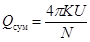
где K - коэффициент фильтрации пласта; U - напорная функция.
Для напорных вод:
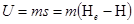 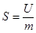
Для безнапорных вод со свободной поверхностью:
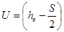 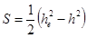 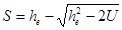
где S - заданное понижение уровня подземных вод в характерной точке осушаемого контура к концу времени t; т - мощность водоносного слоя в м; Нe и he - соответственно первоначальный напор и первоначальная высота столба воды до водоупора в этой точке; H и h - соответственно напор и высота столба воды до водоупора в той же точке в момент времени t.
Функция N характеризует гидравлическое сопротивление, зависящее от расположения систем скважин, условий на границах водоносного пласта, коэффициента пьезопроводности (уровнепроводности) и продолжительности откачки.
Полное понижение уровня воды в скважинах выразится суммой:
,
где S - понижение уровня, обусловленное действием обобщенной
системы; 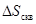
Соответственно полное гидравлическое сопротивление может быть представлено в виде двух слагаемых:
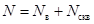
где Nв - внешнее сопротивление, испытываемое потоком при движении к обобщенным системам скважин; Nскв - внутреннее сопротивление, зависящее от расстановки скважин внутри системы.
Внешнее сопротивление Nв обозначается: для линейного ряда скважин Nл, для кольцевой системы Nкр и для площадной Nпл.
При заданной величине понижения S в характерной точке осушаемого контура на момент времени t, Qсум и Sскв определяется путем ряда расчетов, обеспечивающих последовательное приближение к наиболее рациональной схеме расположения и режиму эксплуатации скважин.
При расчетах допускается, что:
пласт является однородным или приведенным к однородному путем осреднения коэффициента фильтрации;
суммарный дебит системы скважин в течение всего срока предварительного водопонижения, т.е. достижения в рассматриваемой точке заданного понижения S, поддерживается постоянным.
2. Системы скважин в безграничном пласте
2.1. Линейная система скважин
При размещении ряда п скважин на
линии длиной 2l (рис. П.1.1) с расходом каждой из них Q
и суммарным расходом всех скважин Qсум гидравлическое coпротивление Nл определяется по графику
(рис. П.1.2)
и зависимости от ln a и или
по графику (рис. П.1.3) в зависимости от ln a и  ,
где
,
где
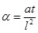 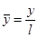 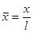
a - коэффициент пьезопроводности (уровнепроводности).
Значения Nл по указанным графикам определяются для точек, расположенных вдоль осей x и у.
Для любой точки пласта с координатами x, y гидравлическое сопротивление определяется по формуле (по Шестакову В.М.):
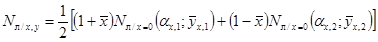
где 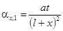 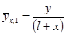 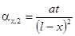 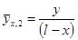
Для точки, находящейся в центре линейной системы скважин, при x = у = 0:
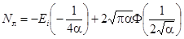
где Ei - интегральная показательная функция, значения
которой в зависимости от 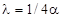 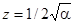
Гидравлическое сопротивление для точек, удаленных от ряда на расстояние 1,5l и более, определяется из следующей зависимости:
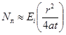
где r - расстояние точки от центра ряда, равное
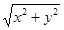
При наличии двух и более рядов скважин расчет их взаимодействия производится с использованием тех же зависимостей, что и для одного ряда. При определении понижения в какой либо точке М (х, у) определяется влияние на эту точку каждого ряда в отдельности и полная напорная функция U находится как сумма напорных функций всех рядов
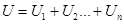
Рис. П.1.1. Схема линейной системы скважин в безграничном пласте
Рис. П.1.2 График функции Nл для точек, расположенных по оси у
Рис. П.1.3. График функции Nп для точек, расположенных на оси х
Рис. П.1.4. График интеграла вероятности
Таблица П.1.1. Таблица значений функции Ei (-λ)
|
λ |
Ei (-λ) |
λ |
Ei (-λ) |
|
0,00 |
- |
2,2 |
-0,0372 |
|
0,01 |
-4,038 |
2,3 |
-0,0325 |
|
0,02 |
-3,355 |
2,4 |
-0,0284 |
|
0,03 |
-2,959 |
2,5 |
-0,0249 |
|
0,04 |
-2,681 |
2,6 |
-0,0219 |
|
0,05 |
-2,468 |
2,7 |
-0,0192 |
|
0,06 |
-2,295 |
2,8 |
-0,0169 |
|
0,07 |
-2,151 |
2,9 |
-0,0148 |
|
0,08 |
-2,027 |
3,0 |
-0,0130 |
|
0,09 |
-1,919 |
3,1 |
-0,0115 |
|
0,10 |
-1,823 |
3,2 |
-0,0101 |
|
0,15 |
-1,465 |
3,3 |
-0,894´10-2 |
|
0,20 |
-1,223 |
3,4 |
-0,789´10-2 |
|
0,25 |
-1,044 |
3,5 |
-0,697´10-2 |
|
0,30 |
-0,906 |
3,6 |
-0,616´10-2 |
|
0,35 |
-0,794 |
3,7 |
-0,545´10-2 |
|
0,40 |
-0,702 |
3,8 |
-0,482´10-2 |
|
0,45 |
-0,625 |
3,9 |
-0,427´10-2 |
|
0,50 |
-0,560 |
4,0 |
-0,378´10-2 |
|
0,55 |
-0,503 |
4,1 |
-0,335´10-2 |
|
0,60 |
-0,454 |
4,2 |
-0,297´10-2 |
|
0,65 |
-0,412 |
4,3 |
-0,263´10-2 |
|
0,70 |
-0,374 |
4,4 |
-0,234´10-2 |
|
0,75 |
-0,340 |
4,5 |
-0,207´10-2 |
|
0,80 |
-0,311 |
4,6 |
-0,184´10-2 |
|
0,85 |
-0,284 |
4,7 |
-0,164´10-2 |
|
0,90 |
-0,260 |
4,8 |
-0,145´10-2 |
|
0,95 |
-0,239 |
4,9 |
-0,129´10-2 |
|
1,00 |
-0,219 |
5,0 |
-0,115´10-2 |
|
1,1 |
-0,186 |
6,0 |
-0,360´10-3 |
|
1,2 |
-0,158 |
7,0 |
-0,116´10-3 |
|
1,3 |
-0,135 |
8,0 |
-0,377´10-4 |
|
1,4 |
-0,116 |
9,0 |
-0,125´10-4 |
|
1,5 |
-0,100 |
10 |
-0,416´10-5 |
|
1,6 |
-0,0863 |
11 |
-0,140´10-5 |
|
1,7 |
-0,0746 |
12 |
-0,475´10-6 |
|
1,8 |
-0,0647 |
13 |
-0,162´10-6 |
|
1,9 |
-0,0562 |
14 |
-0,557´10-7 |
|
2,0 |
-0,0489 |
15 |
-0,192´10-7 |
|
2,1 |
-0,0426 |
2.2. Кольцевая система скважин
Скважины, располагаемые по замкнутому контуру (рис. П.1.5) с расходом каждой из них Q и суммарным расходом всех скважин Qсум, расчета R0 используются следующие формулы:
- при расположении скважин в плане по неправильному многоугольнику (по Форхгеймеру)
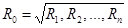
где п - число вершин многоугольника; R1, R2, ..., Rn - расстояние от вершин многоугольника до центра его тяжести;
- при расположении скважин по контуру, близкому к кругу,
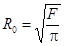
- при расположении скважин в системе,
имеющей в плане вид четырехугольника при 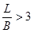
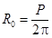
где L - длина четырехугольника; В - ширина; Р - периметр.
При 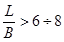
Значения гидравлического сопротивления
для кольцевой системы Nкр даны на
графике (рис. П.1.6) в зависимости от ln a и F,
где 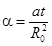 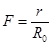
В начальные моменты времени (при a £ 3,5 или ln a £ 1,25) минимальные
значения Nкр имеет
точка в центре кольцевой системы ( 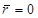 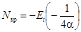
При a > 3,5 понижения уровня во всех точках внутри кольца выравниваются.
Для расчета понижения уровня в точке вне
кольца на расстоянии 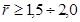
2.3. Площадная система скважин
Площадь, в пределах которой расположены скважины, для расчета можно представить в виде равновеликого круга радиусом R0 (рис. П.1.7):
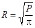
где R - действительная площадь участка, на котором расположены скважины.
Рис. П.1.5. Схема кольцевой системы скважин
Рис. П.1.6. График функции Nкр
Рис. П.1.7. Схема обобщенной системы скважин на кривой площади
Рис. П.1.8. График функции Nпл
Гидравлическое сопротивление Nпл определяется по графику
(рис. П.1.8)
в зависимости от ln a и 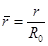
.
Для центра круга
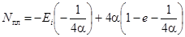
В центре круга при a > 2 ÷ 2,5
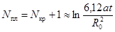
Как и в кольцевой системе, при площадную систему можно заменить единичным колодцем с тем же суммарным расходом.
3. Системы скважин в ограниченных пластах
Для расчетов ограниченных в плане пластов используется метод зеркального отображения и наложения течений. Ниже приводятся формулы (табл. П.1.2) для ограниченных в плане пластов, изображенных на рис. П.1.9, П.1.10 и П.1.11.
N - внешнее гидравлическое сопротивление для соответствующих схем при определении напорной функции в любой точке пласта; Nу - гидравлическое сопротивление для обобщенной системы скважин в безграничном пласте: для линейной системы Nу = Nл, для кольцевой Nу = Nкр, для площадной системы Nу = Nпл.
Рис. П.1.9. Схемы пластов, ограниченных контурами с одной стороны (полуограниченные пласты)
Рис. П.1.10. Схемы пластов, ограниченных двумя взаимно пересекающимися прямолинейными контурами
Рис. П.1.11. Схемы пластов, ограниченных двумя параллельными контурами